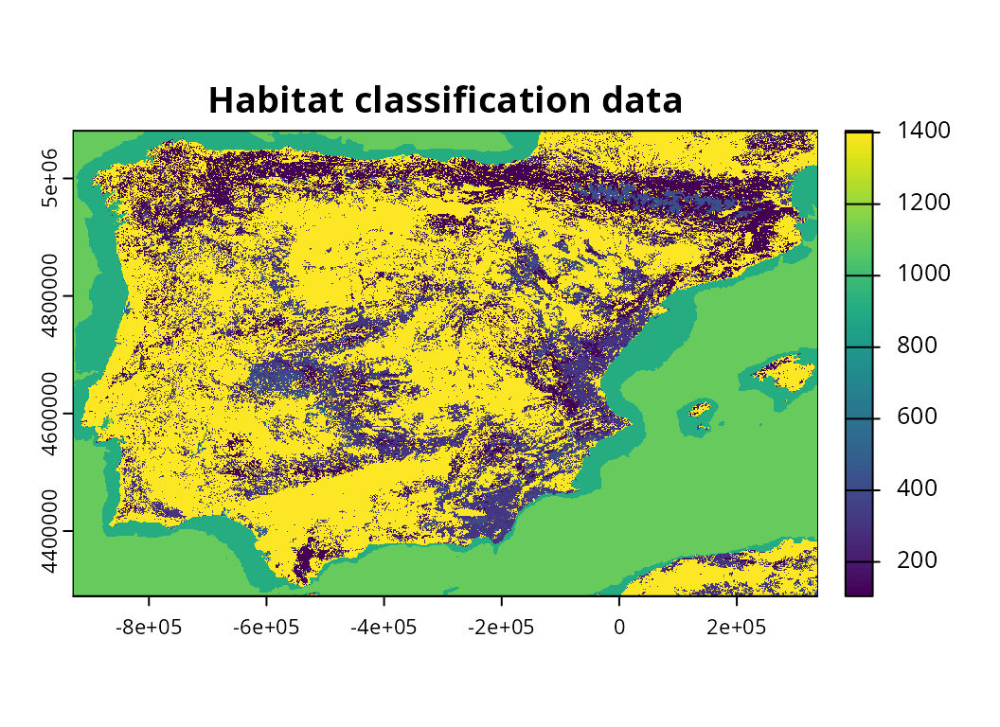

Introduction
The aoh R package provides a flexible framework for generating Area of Habitat data. By default, it will use elevation data derived from Robinson et al. (2014) and habitat classification data derived from Lumbierres et al. (2021). Its defaults also include using species’ elevational limit and habitat preference data from the International Union for Conservation of Nature (IUCN) Red List of Threatened Species. In addition to these defaults, it provides built-in functions to use habitat classification derived from other data sources (e.g., from Jung et al. 2020). The package can also be used to generate Area of Habitat data using other datasets that have been manually created by the user. For example, it could be used to produce Area of Habitat data using habitat classification data derived from Copernicus Corine Land Cover data or species’ elevational limit data from the BirdLife Data Zone.
Tutorial
Here we will show how Area of Habitat data can be generated using particular datasets (rather than the default datasets). In this tutorial, we will manually import data and use them to generate Area of Habitat data. If you have not previously read through the Getting started vignette, this is strongly recommended to provide an introduction to the package. To start off, we will load the package. We will also load the rappdirs package to cache data, the tibble package for storing tabular data, and the terra and ggplot2 R packages to visualize results.
## Error in get(paste0(generic, ".", class), envir = get_method_env()) :
## object 'type_sum.accel' not foundNow we will import geographic range data for the species. Although users would typically obtain such data from the IUCN Red List, here we will import example data distributed with the package. Please note that these data were not obtained from the IUCN Red List, and were generated using random simulations.
# find file path for data
spp_range_path <- system.file(
"testdata", "SIMULATED_SPECIES.zip", package = "aoh"
)
# import data
spp_range_data <- read_spp_range_data(spp_range_path)
# preview data
## dataset follows the same format as the IUCN Red List spatial data
print(spp_range_data)## Simple feature collection with 34 features and 26 fields
## Geometry type: MULTIPOLYGON
## Dimension: XY
## Bounding box: xmin: -9.497 ymin: 36.01108 xmax: 3.318 ymax: 43.793
## Geodetic CRS: WGS 84
## # A tibble: 34 × 27
## id_no seasonal presence origin binomial compiler yrcompiled citation
## <int> <dbl> <dbl> <dbl> <chr> <chr> <dbl> <chr>
## 1 670 2 1 1 Simulus spp. 670 Simulat… NA NA
## 2 670 3 1 1 Simulus spp. 670 Simulat… NA NA
## 3 670 4 1 1 Simulus spp. 670 Simulat… NA NA
## 4 2072 1 1 1 Simulus spp. 2072 Simulat… NA NA
## 5 2072 1 4 4 Simulus spp. 2072 Simulat… NA NA
## 6 2072 1 3 3 Simulus spp. 2072 Simulat… NA NA
## 7 2072 1 3 5 Simulus spp. 2072 Simulat… NA NA
## 8 2374 1 1 1 Simulus spp. 2374 Simulat… NA NA
## 9 2374 1 4 2 Simulus spp. 2374 Simulat… NA NA
## 10 2374 1 5 2 Simulus spp. 2374 Simulat… NA NA
## # ℹ 24 more rows
## # ℹ 19 more variables: subspecies <chr>, subpop <chr>, source <chr>,
## # island <chr>, tax_comm <chr>, dist_comm <chr>, generalisd <int>,
## # legend <chr>, kingdom <chr>, phylum <chr>, class <chr>, order_ <chr>,
## # family <chr>, genus <chr>, category <chr>, marine <chr>, terrestial <chr>,
## # freshwater <chr>, geometry <MULTIPOLYGON [°]>
# visualize data
## each panel corresponds to a different seasonal distribution of a species
map <-
ggplot() +
geom_sf(data = spp_range_data, fill = "darkblue") +
facet_wrap(~ id_no + seasonal)
print(map)
Next, we will import data to describe the species’ habitat
preferences. Although such data would be automatically obtained from the
IUCN Red List by default
(using the get_spp_habitat_data() function), here we will
import example data distributed with the package. As before,
please note that these data were not obtained from the IUCN Red List,
and were randomly generated. If you wish to use your own data,
please ensure that they follow exactly the same conventions (e.g.,
column names, data types, and character values for the
"suitability" and "season" columns).
# find file path for species habitat preference data
spp_habitat_path <- system.file(
"testdata", "sim_spp_habitat_data.csv", package = "aoh"
)
# import species habitat preference data
spp_habitat_data <- read.csv(spp_habitat_path, sep = ",", header = TRUE)
spp_habitat_data <- as_tibble(spp_habitat_data)
# preview data
print(spp_habitat_data, n = Inf)## # A tibble: 42 × 6
## id_no code habitat suitability season majorimportance
## <int> <dbl> <chr> <chr> <chr> <lgl>
## 1 670 14.5 Urban Areas Suitable Breed… NA
## 2 670 14.2 Pastureland Suitable Breed… NA
## 3 670 4.4 Grassland - Temperate Suitable Non-b… NA
## 4 670 3.5 Shrubland - Subtropical/tropi… Suitable Non-b… NA
## 5 670 6 Rocky Areas (e.g., inland cli… Suitable Non-b… NA
## 6 670 1.5 Forest - Subtropical/tropical… Suitable Passa… NA
## 7 670 3.8 Shrubland - Mediterranean-typ… Suitable Passa… NA
## 8 670 3.4 Shrubland - Temperate Suitable Passa… NA
## 9 2072 3.8 Shrubland - Mediterranean-typ… Suitable Resid… NA
## 10 2072 1.4 Forest - Temperate Suitable Resid… NA
## 11 2072 2.1 Savanna - Dry Suitable Resid… NA
## 12 2374 4.4 Grassland - Temperate Suitable Resid… NA
## 13 2374 2.1 Savanna - Dry Suitable Resid… NA
## 14 2374 14.5 Urban Areas Suitable Resid… NA
## 15 3667 1.4 Forest - Temperate Suitable Resid… NA
## 16 3667 3.5 Shrubland - Subtropical/tropi… Suitable Resid… NA
## 17 3667 3.8 Shrubland - Mediterranean-typ… Suitable Resid… NA
## 18 4421 3.5 Shrubland - Subtropical/tropi… Suitable Resid… NA
## 19 4421 4.4 Grassland - Temperate Suitable Resid… NA
## 20 4650 3.8 Shrubland - Mediterranean-typ… Suitable Resid… NA
## 21 4650 4.4 Grassland - Temperate Suitable Resid… NA
## 22 4650 14.5 Urban Areas Suitable Resid… NA
## 23 5808 14.5 Urban Areas Suitable Resid… NA
## 24 5808 14.1 Arable Land Suitable Resid… NA
## 25 5808 14.2 Pastureland Suitable Resid… NA
## 26 5808 3.8 Shrubland - Mediterranean-typ… Suitable Breed… NA
## 27 5808 4.1 Grassland - Tundra Suitable Breed… NA
## 28 5808 2.1 Savanna - Dry Suitable Breed… NA
## 29 5808 14.1 Arable Land Suitable Non-b… NA
## 30 5808 5.5 Wetlands (inland) - Permanent… Suitable Non-b… NA
## 31 5808 3.8 Shrubland - Mediterranean-typ… Suitable Passa… NA
## 32 5808 5.5 Wetlands (inland) - Permanent… Suitable Passa… NA
## 33 5808 4 Grassland Suitable Passa… NA
## 34 6701 3.8 Shrubland - Mediterranean-typ… Suitable Resid… NA
## 35 6701 5.5 Wetlands (inland) - Permanent… Suitable Resid… NA
## 36 6701 4.1 Grassland - Tundra Suitable Resid… NA
## 37 8110 3.8 Shrubland - Mediterranean-typ… Suitable Resid… NA
## 38 8110 1.4 Forest - Temperate Suitable Resid… NA
## 39 8110 14.5 Urban Areas Suitable Resid… NA
## 40 8644 3.4 Shrubland - Temperate Suitable Resid… NA
## 41 8644 14.5 Urban Areas Suitable Resid… NA
## 42 8644 5 Wetlands (inland) Suitable Resid… NANext, we will import data to describe the species’ elevational
limits. Although such data would be automatically obtained from the IUCN Red List by default (using
the get_spp_summary_data() function), here we will import
example data distributed with the package. As before, please
note that these data were not obtained from the IUCN Red List, and were
randomly generated. Since the dataset contains additional
columns that aren’t strictly necessary, we will also update it to
include only necessary columns. If you wish to use your own data, please
ensure that they follow the same conventions (e.g., column names, data
types).
# find file path for species habitat preference data
spp_summary_path <- system.file(
"testdata", "sim_spp_summary_data.csv", package = "aoh"
)
# import species habitat preference data
spp_summary_data <- read.csv(spp_summary_path, sep = ",", header = TRUE)
spp_summary_data <- as_tibble(spp_summary_data)
# extract only necessary columns
col_names <- c("id_no", "elevation_lower", "elevation_upper", "category")
spp_summary_data <- spp_summary_data[, col_names, drop = FALSE]
# preview data
print(spp_summary_data, n = Inf)## # A tibble: 10 × 4
## id_no elevation_lower elevation_upper category
## <int> <int> <int> <chr>
## 1 670 82 942 LC
## 2 2072 46 907 NT
## 3 2374 65 1020 VU
## 4 3667 15 598 EN
## 5 4421 85 949 VU
## 6 4650 54 951 NT
## 7 5808 91 974 VU
## 8 6701 221 1069 EN
## 9 8110 75 991 VU
## 10 8644 182 1183 LCAfter importing all the datasets with the species data, it is
important to ensure that each and every species is associated with
geographic range, habitat preference, and summary data. Here, the
"id_no" column values are used to denote different
taxa—meaning that each species should have a unique identifier. These
identifiers are used when cross-referencing the datasets. For example,
the species named "Simulus spp. 670" has an identifier
("id_no" value) of 670, and this identifier is
used to denote its range in the spp_range_data dataset, its
habitat preferences in the spp_habitat_data dataset, and
its elevational limits in the spp_summary_data dataset. We
can verify that each of the species have the required information across
all three datasets using the following code.
# verify all identifiers in range data are present in habitat preference data
## if we see TRUE: then this means both datasets have the same taxa identifiers
## if we see FALSE: then some taxa identifiers are missing from one dataset
setequal(spp_range_data$id_no, spp_habitat_data$id_no)## [1] TRUE
# verify all identifiers in range data are present in summary data
## if we see TRUE: then this means both datasets have the same taxa identifiers
## if we see FALSE: then some taxa identifiers are missing from one dataset
setequal(spp_range_data$id_no, spp_summary_data$id_no)## [1] TRUEWe will now import elevation data. Although such data would be
automatically imported by default (using the
get_global_elevation_data() function), here we will import
example data distributed with the package.
# find file path for elevation data
elevation_path <- system.file(
"testdata", "sim_elevation_data.tif", package = "aoh"
)
# import elevation data
elevation_data <- rast(elevation_path)
# preview data
print(elevation_data)## class : SpatRaster
## dimensions : 792, 1268, 1 (nrow, ncol, nlyr)
## resolution : 1000, 1000 (x, y)
## extent : -929631, 338369, 4289077, 5081077 (xmin, xmax, ymin, ymax)
## coord. ref. : World_Behrmann
## source : sim_elevation_data.tif
## name : dem-100m-esri54017
## min value : -4
## max value : 3260
# visualize data
plot(elevation_data, main = "Elevation data")
Next, we will import habitat classification data. Although such data
would be automatically imported by default (using the
get_lumb_cgls_habitat_data() function), here we will import
example data distributed with the package.
# find file path for elevation data
habitat_path <- system.file(
"testdata", "sim_habitat_data.tif", package = "aoh"
)
# import habitat classification data
habitat_data <- rast(habitat_path)
# preview data
print(habitat_data)## class : SpatRaster
## dimensions : 792, 1268, 1 (nrow, ncol, nlyr)
## resolution : 1000, 1000 (x, y)
## extent : -929631, 338369, 4289077, 5081077 (xmin, xmax, ymin, ymax)
## coord. ref. : World_Behrmann
## source : sim_habitat_data.tif
## name : jung-lvl2-10-5281_zenodo-4058819
## min value : 104
## max value : 1405
# visualize data
plot(habitat_data, main = "Habitat classification data")
Critically, the elevation data and habitat classification data must have exactly the same spatial properties. This means they must have the same coordinate reference system, resolution, and spatial extent. If you are using elevation or habitat classification data that you have previously prepared yourself (or manually download from online sources), you may need to resample (or reproject) your data to ensure both datasets have the same spatial properties using a geographic information system (GIS). For example, data could be resampled using ESRI ArcGIS, QGIS, terra R package, or the gdalUtilities R package. We can verify that both of the elevation and habitat classification datasets have the same spatial properties using the following code.
# verify that elevation and habitat classification data have same properties
## if we see TRUE, this means they have the same spatial properties.
## otherwise, if we see an error, then this means that they do not have
## have the same spatial properties and require updating
compareGeom(elevation_data, habitat_data)## [1] TRUEWe will now import a crosswalk table for the habitat classification
data. A crosswalk table specifies which pixel values in the habitat
classification data correspond to which IUCN
habitat classes. This table can specify one-to-one relationships
(e.g., pixel value 12 corresponds to IUCN class 1.1), one-to-many
relationships (e.g., pixel values 12 corresponds to IUCN classes 1.1 and
1.2), and many-to-many relationships (e.g., both pixel values 12 and 13
each correspond to IUCN classes 1.1 and 1.2). Although such data would
be automatically imported by default (i.e., the
crosswalk_lumb_cgls_data built-in dataset), here we will
import example data distributed with the package. When using your own
habitat classification data, please ensure that it follows the same
format (i.e., same column names and data types).
# find file path for crosswalk data
crosswalk_path <- system.file(
"testdata", "sim_crosswalk.csv", package = "aoh"
)
# import crosswalk data
crosswalk_data <- read.csv(crosswalk_path, sep = ",", header = TRUE)
crosswalk_data <- as_tibble(crosswalk_data)
# print table
## code column contains codes for the IUCN habitat classes
## value column contains values in the habitat classification data
print(crosswalk_data, n = Inf)## # A tibble: 126 × 2
## code value
## <chr> <int>
## 1 1 100
## 2 1.1 101
## 3 1.2 102
## 4 1.3 103
## 5 1.4 104
## 6 1.5 105
## 7 1.6 106
## 8 1.7 107
## 9 1.8 108
## 10 1.9 109
## 11 2 200
## 12 2.1 201
## 13 2.2 202
## 14 3 300
## 15 3.1 301
## 16 3.2 302
## 17 3.3 303
## 18 3.4 304
## 19 3.5 305
## 20 3.6 306
## 21 3.7 307
## 22 3.8 308
## 23 4 400
## 24 4.1 401
## 25 4.2 402
## 26 4.3 403
## 27 4.4 404
## 28 4.5 405
## 29 4.6 406
## 30 4.7 407
## 31 5 500
## 32 5.1 501
## 33 5.2 502
## 34 5.3 503
## 35 5.4 504
## 36 5.5 505
## 37 5.6 506
## 38 5.7 507
## 39 5.8 508
## 40 5.9 509
## 41 5.10 510
## 42 5.11 511
## 43 5.12 512
## 44 5.13 513
## 45 5.14 514
## 46 5.15 515
## 47 5.16 516
## 48 5.17 517
## 49 5.18 518
## 50 6 600
## 51 7 700
## 52 7.1 701
## 53 7.2 702
## 54 8 800
## 55 8.1 801
## 56 8.2 802
## 57 8.3 803
## 58 9 900
## 59 9.1 901
## 60 9.2 902
## 61 9.3 903
## 62 9.4 904
## 63 9.5 905
## 64 9.6 906
## 65 9.7 907
## 66 9.8 908
## 67 9.8.1 981
## 68 9.8.2 982
## 69 9.8.3 983
## 70 9.8.4 984
## 71 9.8.5 985
## 72 9.8.6 986
## 73 9.9 909
## 74 9.10 910
## 75 10 1000
## 76 10.1 1001
## 77 10.2 1002
## 78 10.3 1003
## 79 10.4 1004
## 80 11 1100
## 81 11.1 1101
## 82 11.1.1 1111
## 83 11.2 1102
## 84 11.1.2 1112
## 85 11.3 1103
## 86 11.4 1104
## 87 11.5 1105
## 88 11.6 1106
## 89 12 1200
## 90 12.1 1201
## 91 12.2 1202
## 92 12.3 1203
## 93 12.4 1204
## 94 12.5 1205
## 95 12.7 1207
## 96 12.6 1206
## 97 13 1300
## 98 13.1 1301
## 99 13.2 1302
## 100 13.3 1303
## 101 13.4 1304
## 102 13.5 1305
## 103 14 1400
## 104 14.1 1401
## 105 14.2 1402
## 106 14.3 1403
## 107 14.4 1404
## 108 14.5 1405
## 109 14.6 1406
## 110 15 1500
## 111 15.1 1501
## 112 15.2 1502
## 113 15.3 1503
## 114 15.4 1504
## 115 15.5 1505
## 116 15.6 1506
## 117 15.7 1507
## 118 15.8 1508
## 119 15.9 1509
## 120 15.10 1510
## 121 15.11 1511
## 122 15.12 1512
## 123 15.13 1513
## 124 16 1600
## 125 17 1700
## 126 18 1800After importing all the data, we can clean and collate information together for generating Area of Habitat data.
# create data with information for Area of Habitat data
spp_info_data <- create_spp_info_data(
spp_range_data,
spp_summary_data = spp_summary_data,
spp_habitat_data = spp_habitat_data
)
# preview data
print(spp_info_data, width = Inf)## Simple feature collection with 15 features and 8 fields
## Geometry type: MULTIPOLYGON
## Dimension: XY
## Bounding box: xmin: -916330.2 ymin: 4304151 xmax: 320141.5 ymax: 5069358
## Projected CRS: World_Behrmann
## # A tibble: 15 × 9
## id_no binomial category migratory seasonal
## <int> <chr> <chr> <lgl> <int>
## 1 670 Simulus spp. 670 LC TRUE 2
## 2 670 Simulus spp. 670 LC TRUE 3
## 3 670 Simulus spp. 670 LC TRUE 4
## 4 2072 Simulus spp. 2072 NT FALSE 1
## 5 2374 Simulus spp. 2374 VU FALSE 1
## 6 3667 Simulus spp. 3667 EN FALSE 1
## 7 4421 Simulus spp. 4421 VU FALSE 1
## 8 4650 Simulus spp. 4650 NT FALSE 1
## 9 5808 Simulus spp. 5808 VU TRUE 1
## 10 5808 Simulus spp. 5808 VU TRUE 2
## 11 5808 Simulus spp. 5808 VU TRUE 3
## 12 5808 Simulus spp. 5808 VU TRUE 4
## 13 6701 Simulus spp. 6701 EN FALSE 1
## 14 8110 Simulus spp. 8110 VU FALSE 1
## 15 8644 Simulus spp. 8644 LC FALSE 1
## full_habitat_code elevation_lower elevation_upper
## <chr> <dbl> <dbl>
## 1 14.2|14.5 82 942
## 2 3.5|4.4|6 82 942
## 3 1.5|3.4|3.8 82 942
## 4 1.4|2.1|3.8 46 907
## 5 2.1|4.4|14.5 65 1020
## 6 1.4|3.5|3.8 15 598
## 7 3.5|4.4 85 949
## 8 3.8|4.4|14.5 54 951
## 9 2.1|3.8|4.1|5.5|14.1|14.2|14.5 91 974
## 10 2.1|3.8|4.1|14.1|14.2|14.5 91 974
## 11 5.5|14.1|14.2|14.5 91 974
## 12 3.8|4|5.5|14.1|14.2|14.5 91 974
## 13 3.8|4.1|5.5 221 1069
## 14 1.4|3.8|14.5 75 991
## 15 3.4|5|14.5 182 1183
## geometry
## <MULTIPOLYGON [m]>
## 1 (((-744167.8 5065733, -744758.3 5065030, -745429.8 5064437, -745619 5064063,…
## 2 (((27902.87 4746365, 27056.68 4747482, 26787.49 4748880, 27030.63 4750311, 2…
## 3 (((-463308.8 4832969, -462721.2 4833049, -461995.6 4833183, -461258.5 483323…
## 4 (((-415672.5 4377074, -416862.2 4377160, -416399.1 4377219, -415731.4 437712…
## 5 (((-568331.2 4328892, -568572.4 4330309, -568690.1 4331566, -568471.1 433245…
## 6 (((-598890.3 4658362, -599068.8 4657037, -598638.5 4656082, -597329.2 465567…
## 7 (((-862522.7 4407131, -862193.7 4407172, -862201.4 4407165, -862640.4 440702…
## 8 (((-613250.4 4368112, -611865.8 4368219, -610831.5 4368152, -610384.8 436778…
## 9 (((-604205.8 4355480, -604258.8 4354866, -604481.7 4354214, -604629.3 435369…
## 10 (((-214939.6 4390035, -213485.5 4389897, -212252.4 4389503, -211509.5 438892…
## 11 (((-712163.3 4853217, -712938.1 4854392, -714015.8 4854814, -715276.9 485473…
## 12 (((-853538.9 4415882, -853532.1 4415239, -853670.1 4414456, -853800.3 441371…
## 13 (((-501888.8 5040197, -501188.3 5040426, -500444.4 5040511, -499781.6 504024…
## 14 (((-259653.3 4377133, -259650.4 4376545, -259928.2 4375843, -260216.7 437513…
## 15 (((166524.7 4944201, 165755.7 4943358, 165117 4942089, 164815 4940646, 16505…Next, we can generate the Area of Habitat data.
# specify folder to save Area of Habitat data
## although we use a temporary directory here to avoid polluting your computer
## with examples files, you would normally specify the folder
## on your computer where you want to save data
output_dir <- tempdir()
# generate Area of Habitat data
spp_aoh_data <- create_spp_aoh_data(
spp_info_data,
elevation_data = elevation_data,
habitat_data = habitat_data,
crosswalk_data = crosswalk_data,
output_dir = output_dir
)
# preview results
## resulting dataset is a simple features (sf) object containing
## spatial geometries for cleaned versions of the range data
## (in the geometry column) and the following additional columns:
##
## - id_no : IUCN Red List taxon identifier
## - seasonal : integer identifier for seasonal distributions
## - category : character IUCN Red List threat category
## - full_habitat_code: All IUCN Red List codes for suitable habitat classes
## (multiple codes are delimited using "|" symbols)
## - habitat_code : IUCN Red List codes for suitable habitat classes
## used to create AOH maps
## - elevation_lower : lower limit for the species on IUCN Red List
## - elevation_upper : upper limit for the species on IUCN Red List
## - xmin : minimum x-coordinate for Area of Habitat data
## - xmax : maximum x-coordinate for Area of Habitat data
## - ymin : minimum y-coordinate for Area of Habitat data
## - ymax : maximum y-coordinate for Area of Habitat data
## - path : file path for Area of Habitat data (GeoTIFF format)
print(spp_aoh_data, width = Inf)## Simple feature collection with 15 features and 14 fields
## Geometry type: MULTIPOLYGON
## Dimension: XY
## Bounding box: xmin: -916330.2 ymin: 4304151 xmax: 320141.5 ymax: 5069358
## Projected CRS: World_Behrmann
## # A tibble: 15 × 15
## id_no binomial category migratory seasonal
## * <int> <chr> <chr> <lgl> <int>
## 1 670 Simulus spp. 670 LC TRUE 2
## 2 670 Simulus spp. 670 LC TRUE 3
## 3 670 Simulus spp. 670 LC TRUE 4
## 4 2072 Simulus spp. 2072 NT FALSE 1
## 5 2374 Simulus spp. 2374 VU FALSE 1
## 6 3667 Simulus spp. 3667 EN FALSE 1
## 7 4421 Simulus spp. 4421 VU FALSE 1
## 8 4650 Simulus spp. 4650 NT FALSE 1
## 9 5808 Simulus spp. 5808 VU TRUE 1
## 10 5808 Simulus spp. 5808 VU TRUE 2
## 11 5808 Simulus spp. 5808 VU TRUE 3
## 12 5808 Simulus spp. 5808 VU TRUE 4
## 13 6701 Simulus spp. 6701 EN FALSE 1
## 14 8110 Simulus spp. 8110 VU FALSE 1
## 15 8644 Simulus spp. 8644 LC FALSE 1
## full_habitat_code habitat_code elevation_lower
## * <chr> <chr> <dbl>
## 1 14.2|14.5 14.2|14.5 82
## 2 3.5|4.4|6 3.5|4.4|6 82
## 3 1.5|3.4|3.8 1.5|3.4|3.8 82
## 4 1.4|2.1|3.8 1.4|2.1|3.8 46
## 5 2.1|4.4|14.5 2.1|4.4|14.5 65
## 6 1.4|3.5|3.8 1.4|3.5|3.8 15
## 7 3.5|4.4 3.5|4.4 85
## 8 3.8|4.4|14.5 3.8|4.4|14.5 54
## 9 2.1|3.8|4.1|5.5|14.1|14.2|14.5 2.1|3.8|4.1|5.5|14.1|14.2|14.5 91
## 10 2.1|3.8|4.1|14.1|14.2|14.5 2.1|3.8|4.1|14.1|14.2|14.5 91
## 11 5.5|14.1|14.2|14.5 5.5|14.1|14.2|14.5 91
## 12 3.8|4|5.5|14.1|14.2|14.5 3.8|4|5.5|14.1|14.2|14.5 91
## 13 3.8|4.1|5.5 3.8|4.1|5.5 221
## 14 1.4|3.8|14.5 1.4|3.8|14.5 75
## 15 3.4|5|14.5 3.4|5|14.5 182
## elevation_upper xmin xmax ymin ymax path
## * <dbl> <dbl> <dbl> <dbl> <dbl> <chr>
## 1 942 -896631 -648631 4946077 5067077 /tmp/RtmpzvVcpy/670_2.tif
## 2 942 -417631 320369 4742077 5033077 /tmp/RtmpzvVcpy/670_3.tif
## 3 942 -527631 -312631 4664077 4840077 /tmp/RtmpzvVcpy/670_4.tif
## 4 907 -916631 39369 4328077 5070077 /tmp/RtmpzvVcpy/2072_1.tif
## 5 1020 -868631 320369 4304077 5070077 /tmp/RtmpzvVcpy/2374_1.tif
## 6 598 -794631 -305631 4334077 4678077 /tmp/RtmpzvVcpy/3667_1.tif
## 7 949 -863631 -8631 4400077 5062077 /tmp/RtmpzvVcpy/4421_1.tif
## 8 951 -916631 203369 4304077 5070077 /tmp/RtmpzvVcpy/4650_1.tif
## 9 974 -621631 -354631 4304077 4456077 /tmp/RtmpzvVcpy/5808_1.tif
## 10 974 -375631 -201631 4373077 4519077 /tmp/RtmpzvVcpy/5808_2.tif
## 11 974 -771631 -651631 4781077 4861077 /tmp/RtmpzvVcpy/5808_3.tif
## 12 974 -868631 275369 4406077 5058077 /tmp/RtmpzvVcpy/5808_4.tif
## 13 1069 -896631 -74631 4634077 5070077 /tmp/RtmpzvVcpy/6701_1.tif
## 14 991 -868631 291369 4304077 5044077 /tmp/RtmpzvVcpy/8110_1.tif
## 15 1183 -402631 183369 4624077 5000077 /tmp/RtmpzvVcpy/8644_1.tif
## geometry
## * <MULTIPOLYGON [m]>
## 1 (((-744167.8 5065733, -744758.3 5065030, -745429.8 5064437, -745619 5064063,…
## 2 (((27902.87 4746365, 27056.68 4747482, 26787.49 4748880, 27030.63 4750311, 2…
## 3 (((-463308.8 4832969, -462721.2 4833049, -461995.6 4833183, -461258.5 483323…
## 4 (((-415672.5 4377074, -416862.2 4377160, -416399.1 4377219, -415731.4 437712…
## 5 (((-568331.2 4328892, -568572.4 4330309, -568690.1 4331566, -568471.1 433245…
## 6 (((-598890.3 4658362, -599068.8 4657037, -598638.5 4656082, -597329.2 465567…
## 7 (((-862522.7 4407131, -862193.7 4407172, -862201.4 4407165, -862640.4 440702…
## 8 (((-613250.4 4368112, -611865.8 4368219, -610831.5 4368152, -610384.8 436778…
## 9 (((-604205.8 4355480, -604258.8 4354866, -604481.7 4354214, -604629.3 435369…
## 10 (((-214939.6 4390035, -213485.5 4389897, -212252.4 4389503, -211509.5 438892…
## 11 (((-712163.3 4853217, -712938.1 4854392, -714015.8 4854814, -715276.9 485473…
## 12 (((-853538.9 4415882, -853532.1 4415239, -853670.1 4414456, -853800.3 441371…
## 13 (((-501888.8 5040197, -501188.3 5040426, -500444.4 5040511, -499781.6 504024…
## 14 (((-259653.3 4377133, -259650.4 4376545, -259928.2 4375843, -260216.7 437513…
## 15 (((166524.7 4944201, 165755.7 4943358, 165117 4942089, 164815 4940646, 16505…Finally, let’s create some maps to compare the range data with the Area of habitat data. Although we could create these maps manually (e.g., using the ggplot2 R package), we will use a plotting function distributed with the aoh R package for convenience. Although the full dataset contains many species; for brevity, we will only show the first four species’ seasonal distributions.
# create maps
## N.B. you might need to install the ggmap package to create the maps
map <-
plot_spp_aoh_data(
spp_aoh_data[1:4, ],
zoom = 6,
maptype = "stamen_toner_background",
maxcell = Inf
) +
scale_fill_viridis_d() +
scale_color_manual(values = c("range" = "red")) +
scale_size_manual(values = c("range" = 0.5)) +
theme(
axis.title = element_blank(),
axis.text = element_text(size = 6),
strip.text = element_text(color = "white"),
strip.background = element_rect(fill = "black", color = "black")
)
# display maps
print(map)
Conclusion
Hopefully, this vignette has provided a useful overview for customizing Area of Habitat data. If you have any questions or suggestions for additional elevation, habitat classification, or crosswalk datasets that could be included in the package, please file an issue at the package’s online code repository.